Eight research studies that uncover new measurements, hidden data, and fresh insights about brains, animals, the Sun, and history — often from data that already existed.
Atharva Chourey Lab · A human–AI research lab — Atharva Chourey, in sustained collaboration with Lapis, an AI research partner (Muse). Every result below is the product of that collaboration: human questions, judgement and verification; AI search, extraction and audit at a scale neither reaches alone.
These are research findings — not yet peer-reviewed and not yet independently replicated.
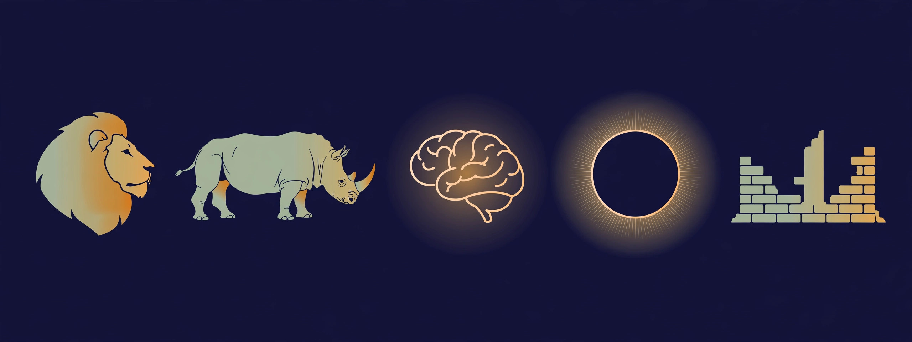
Illustration (generated artwork, not data or photography).
How this happened · 16–17 November 2026
Twenty-four hours of talking
The lab's intellectual property is a way of working: a researcher thinking out loud — on drives, on walks, in ordinary chat — with an AI partner that pre-registers, measures, audits and publishes. No lab bench. A conversation.
Everything on this page was produced in one discovery stretch of casual chat sessions — mostly voice, much of it transcribed from drives and walks rather than typed at a bench. The sessions, from the lab's own record:
Mon 16 Nov 2026, ≈23:00 PST — the programme is authorised
In an ordinary chat session, the brain-comparison programme gets its go-ahead — “all except going public” — and the work runs through the night and all of Tuesday: the brain-archive audit, the eclipse re-reduction, the Gazetteers famine panel, the India historical-stats panel, Nalanda, and the correction campaigns.
Tue 17 Nov 2026, ≈20:49–22:08 PST — results land, and the lab goes public
The six-target havoc sweep reports through the day; in the evening the manuscripts are written up, precedent-checked and published to this site — the updated page verified live at 22:08 PST.
Six headlines from that stretch:
First MRI measurement of the lion hippocampus — 2.02 cm³, against the 4.50 cm³ cited since 2007.
A brain archive's empty files exposed — 18 of 71 label files were empty placeholders that looked like data.
The same brain, two sizes — a marmoset's hippocampal formation measures −21.0% after fixation, in 30 of 30 animals.
A probable sign error in the eclipse tables — the famous 1715 point inverts the centuries-old shrinking-Sun claim.
The forearm splits the rhinos — all five living species separated by a measurement nobody had computed.
Nalanda's 10,000 traced — to Huili's biography, not to Xuanzang, where textbooks put it.
Session times are from the lab's own session record; windows marked ≈ are approximate. The voice-first detail is part of the record, not a garnish: the questions were spoken, the AI did the measuring, and every claim below was checked before it was published.
The Eight Key Findings
Each finding was checked against the archive it came from, with a complete map from every number to its source.
1
The lion's memory region is smaller than the field thought
2.02 cm³ new MRI measurement
4.50 cm³ the earlier histological value
The first MRI measurement of the lion hippocampus — 2.02 cm³ (2.022 cm³, 74,899 voxels at full resolution) — against the 4.50 cm³ histological value published by Reep et al. (2007) and cited since. Above: the real 3D surface of that label, rotatable. Explore the full brain in the Brain Explorer below.
Why it matters: a key memory region may be smaller in lions than thought — the field's number was histological, never MRI.
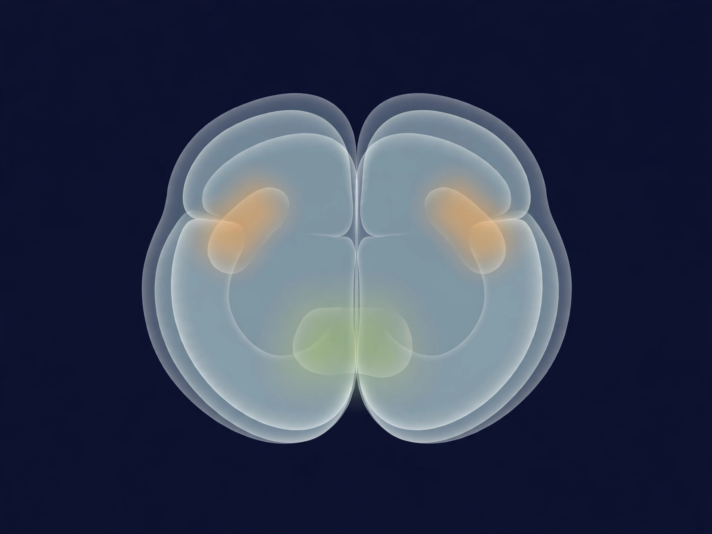
2
A brain archive full of empty files
53 of 71 label files usable
18 empty placeholders
An end-to-end audit of a public comparative-brain archive found 53 usable label files of 71 — the other 18 were empty placeholders that looked like data. Below: real MRI slices through the lion hippocampus label.
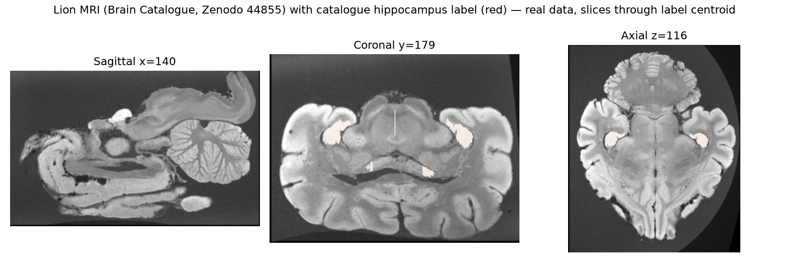
Why it matters: the audit rescues valuable data — and stops future researchers using misleading labels.
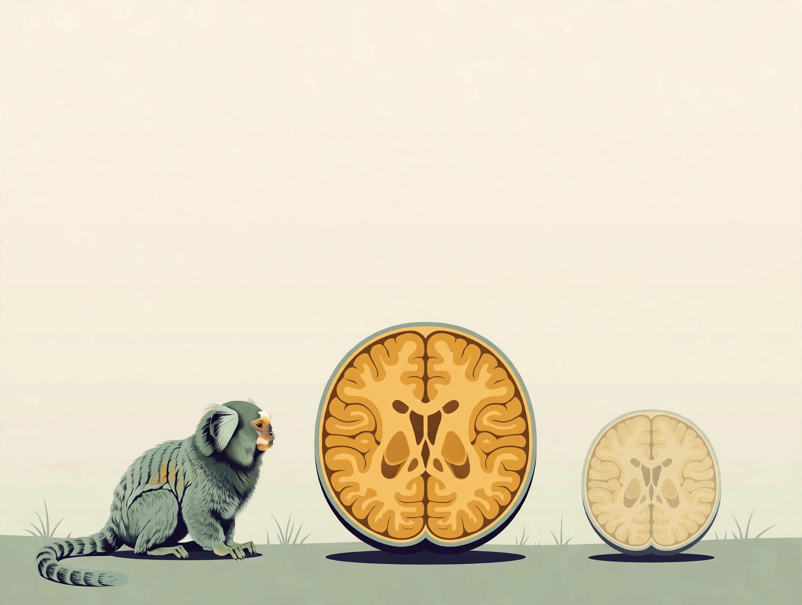
3
The same brain measures smaller after fixation
−21.0% hippocampal formation, fixed vs alive
−10.4% total labelled gray matter
Thirty marmosets in the Brain/MINDS dataset were scanned alive and again after perfusion fixation — the same brains, the same atlas, the same pipeline — under a test pre-registered before any download. The hippocampal formation reads 21.0% smaller in the fixed brain, in all 30 of 30 animals; total labelled gray matter reads 10.4% smaller (the atlas labels gray matter only, so that total is a gray-matter total — a declared scope). Below: every animal, alive vs fixed.
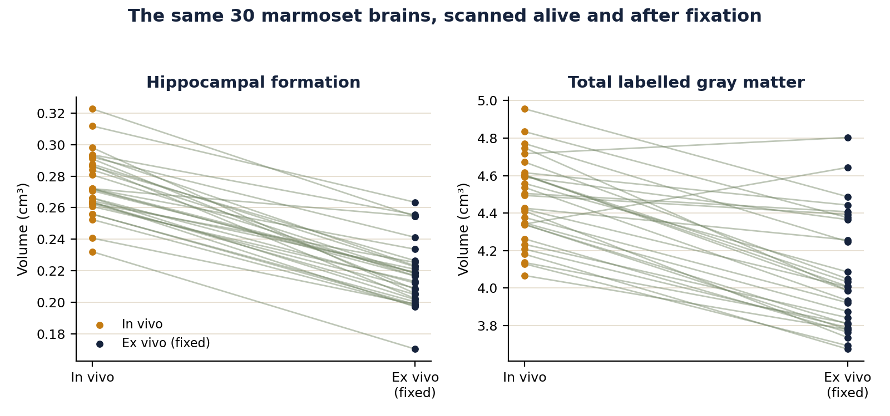
Why it matters: preparation itself moves the number by ~21% — the size of the effects the field argues about — so disagreements between archives cannot be dismissed as cohort noise.
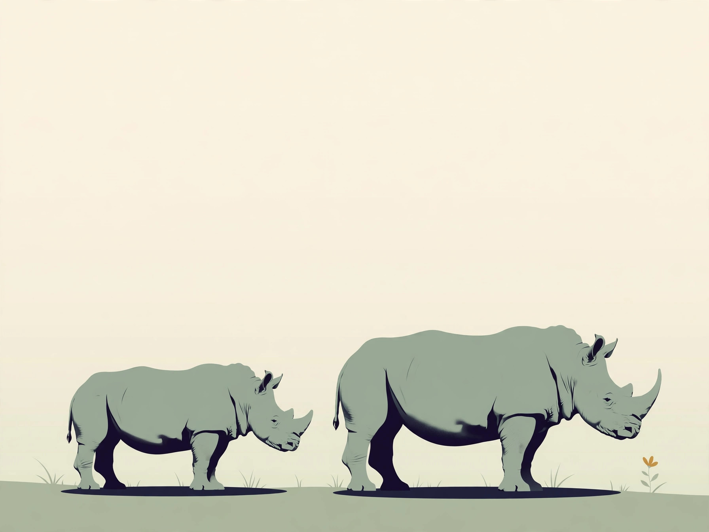
4
The forearm splits the rhinos
10 of 10 species comparisons significant
From 38 complete skeletons (all six bones) and 308 specimen-bone files in existing open data: all 10 pairwise species comparisons are significant (p ≤ 0.040; 8 of 10 survive Bonferroni). Largest split: black rhino vs greater one-horned rhino, 0.0566 log₁₀, p = 0.0014. The forearm profile runs −0.0450 (R. unicornis) to −0.0072 (D. bicornis).
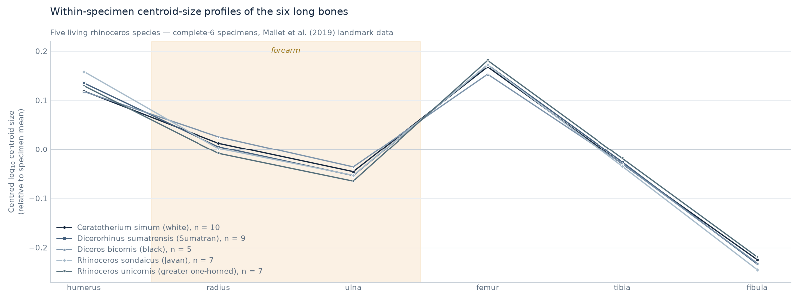
Why it matters: clear anatomical differences between rhino species — from existing open data.
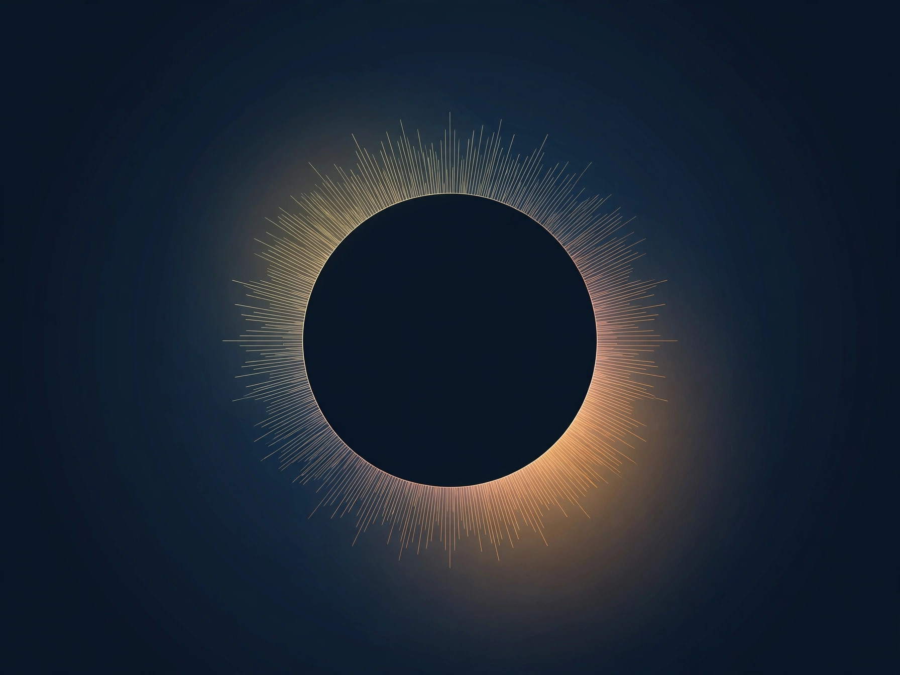
5
Two eclipse tables tell opposite stories
959.494 ± 0.044″ solar radius
Re-reducing historical eclipses with modern lunar topography gives a solar radius of 959.494 ± 0.044″ — vs Auwers 959.63″ and the IAU standard 959.22″. The two canonical tables disagree on 7 of 9 overlaps, with five sign flips; the 1715 value is a probable sign error.
Eclipse
Fiala 1994 ΔR
Dunham 2016 ΔR
1715
+0.48
−0.50
1925
+0.51
−0.21
1976
+0.04
−0.38
1987
−0.11
+0.10
1983
+0.09
−0.10
Why it matters: different historical datasets lead to opposite conclusions about the Sun.
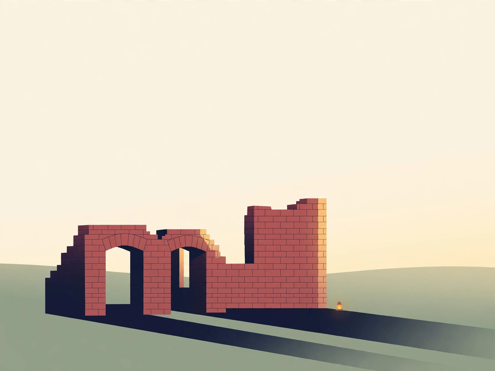
6
Nalanda's famous 10,000 was never Xuanzang's number
~3,000–3,500 defensible peak residents
The traditional claim of 10,000 residents comes from Huili's biography, not Xuanzang — in print since Beal's translations of 1884/1911, yet still credited to Xuanzang. The site's physical capacity ceiling is below 2,000; a defensible peak is ~3,000–3,500.
Why it matters: a more evidence-based view of a great centre of learning.
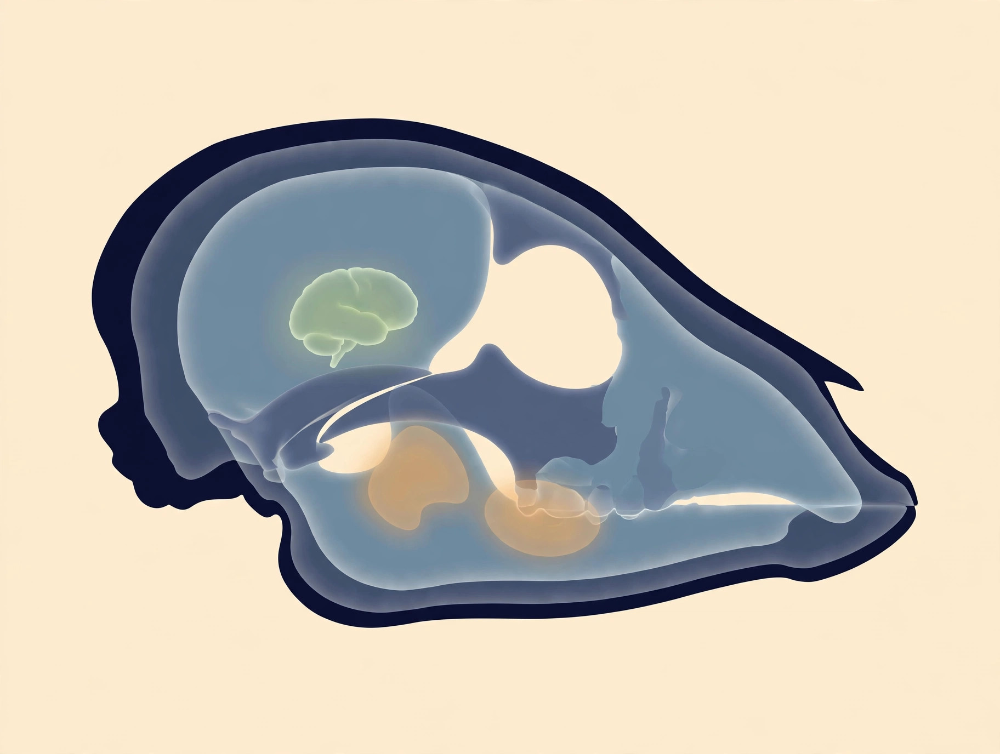
7
The brain does not fill the skull
40.5% of species inside the assumed 90–100% band
0.919 median occupancy, 42 species
Fossil brain-size estimates assume the brain fills 100% of the skull. Joining the skull and brain literatures for 42 mammal species: median occupancy is 0.919, whole orders sit at 0.79–0.84, the bowhead whale at 0.32 — and 19% of species return impossible values above 100%, because the two rulers disagree by more than the shortfall. The lion's occupancy is 1.02 on the histology ruler and 0.77 on the MRI ruler.
Why it matters: fossil encephalisation quotients carry an unacknowledged ruler-dependent error of at least ±10–25% — and no single replacement constant would be honest.
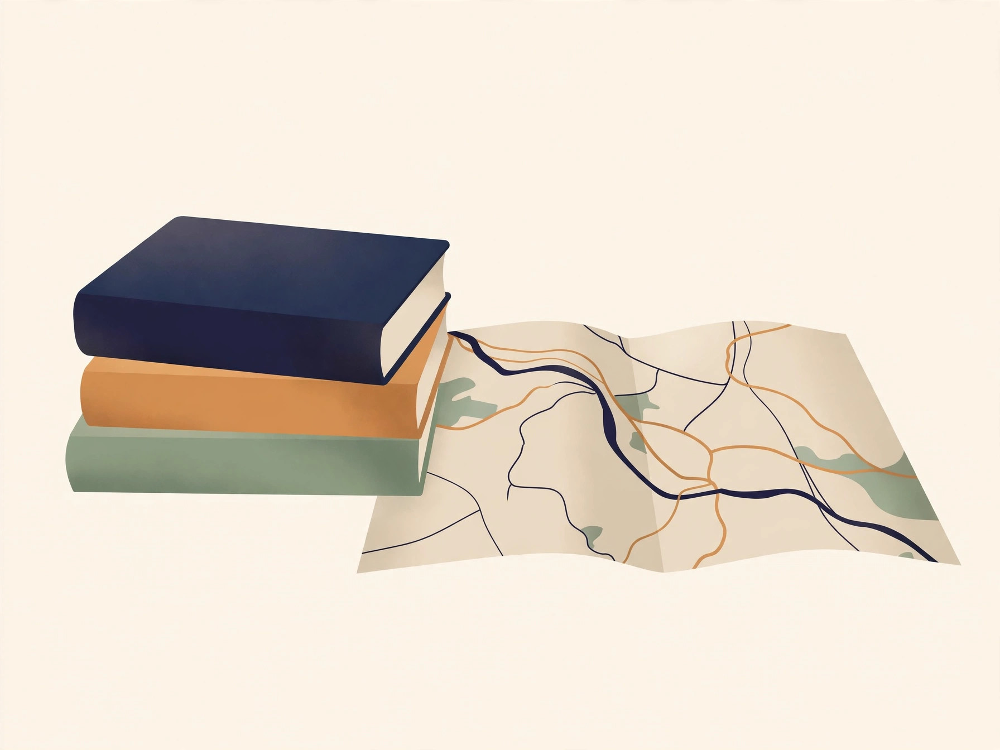
8
Most standard questions cannot be answered
Testable4
Underpowered11
Untestable8
The Testability Atlas graded 23 standard questions in Indian historical statistics against the data that actually survives: 4 testable, 11 underpowered, 8 untestable.
Why it matters: it helps researchers ask better, more realistic questions.
Additional findings
r = −0.05Famine of 1900: mean rainfall vs population loss correlates at r = −0.05 — essentially nothing. Princely states lost −16.2% vs British districts −7.5% (n = 34 units). Political boundaries, not weather, carry the signal.
~1.6×Two Rulers: the two great brain archives disagree by ~1.6× across 343 paired species — a systematic offset every mixed-method comparison inherits.
2.90 ± 0.31 cm³Newborn check: the human newborn hippocampus (n = 10, M-CRIB) sits 12% below the generic mammalian scaling line (predicted 3.30 cm³) — a registered scaling-line check, reported as such.
−81% to −92%Whales: four literature cetaceans sit at −81.3% to −92.0% residuals vs the scaling line, while manatee (+20.2%) and hippo (+47.1%) break any habitat reading: phylogeny, not habitat — and four cetaceans are effectively one evolutionary datapoint.
r = −0.627Dogs: breed size vs lifespan across 125 breeds — bigger breeds live shorter lives (p = 5.5×10⁻¹⁵). A pre-registered replication recovered 14 of Hayward et al.'s 17 size QTLs with zero direction errors; Plassais et al.'s sequencing-derived markers recovered only 6 of 13 — they do not transfer into a kinship model — and every lifespan signal at the size loci is the size association itself.
The big picture
Valuable new knowledge can emerge from data scientists have already collected — when it is re-measured, re-analysed, and carefully checked.
Key takeaways
New measurements can challenge accepted numbers — the lion hippocampus is 2.02 cm³ by MRI, not the 4.50 cm³ long cited.
The same brain measures differently alive and fixed — in 30 marmosets the hippocampal formation reads 21% smaller after fixation, in every single animal.
Old data still yields original discoveries — the rhino forearm split was sitting in published open data.
Historical and astronomical records need careful scrutiny — eclipse tables, Nalanda's 10,000, and colonial famine data all changed under checking.
These are research findings, not yet independently replicated or peer-reviewed.
Brain Explorer — 37 species, real scans
Every species in the Brain Catalogue, explorable in your browser. Pick a species to load its real MRI volume and recovered labels — loaded on selection only, never all at once. Species whose label files are empty placeholders are shown greyed and flagged, not hidden: that emptiness is itself one of the lab's findings. The lion — the headline specimen — loads at full resolution; other species load web copies downsampled ×2 (×3 for the largest scans), with all quoted volumes measured at full resolution.
Tap an animal to load its real brain scan below. The animal portraits are illustrations (generated artwork) — the brains are real data. Animals marked “label empty” are greyed because their hippocampus label file in the archive is an empty placeholder: that emptiness is one of the lab's findings, and the explorer shows it rather than hiding it.
Volume · MRI + labels
Loading the lion at full resolution…
Surface · drag to rotate
Loading surface…
Free orbit: drag the surface · scroll the volume to change slice · use + / − on the surface viewer to zoom.
4.50 cm³Histological comparator (Reep et al. 2007)
Full-res276×334×209 @ 0.3 mm · 74,899 voxels
How to read this: volumes are quoted from full-resolution labels, never from the downsampled web overlays. The published paper reports 53 usable / 18 empty of 71 label files; this explorer marks files empty by direct voxel count — a later full recount found 5 additional empty Striatum files (48 real / 23 empty). Full reconciliation is documented in the lab's asset record (ASSETS.md).
Attribution: Brain Catalogue — Santin, Herbin & Toro (2016), Zenodo record 44855, CC BY-NC 4.0 — non-commercial use with attribution. The lion whole-brain surface in the poster card's companion viewer is the lab's own product from its Otsu mask (full-res, 63,106 verts); the lion hippocampus surface is built from the full-resolution catalogue label (45,393 verts, Taubin-smoothed). Per-species meshes are catalogue mesh.ply conversions or lab-derived from Atlas masks, as flagged in the manifest. If WebGL or the CDN fails, the slice montage above is the honest fallback.
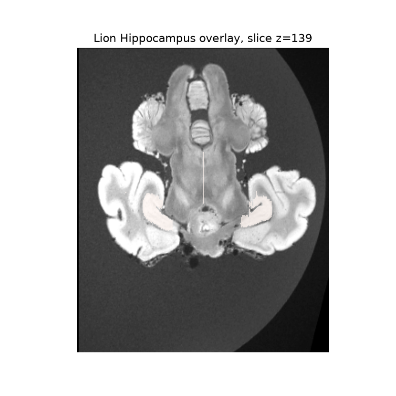
Quality control — the project's own QC overlay figure for the lion hippocampus label, from the original analysis.
The lab in numbers
8 manuscripts published openly in a single programme — neuroanatomy, comparative morphology, astronomy, history of science, historical statistics — each CC BY 4.0, each with a complete map from every number to its source. 343 species compared across the two great brain archives, and 53 of 71 archive labels recovered — the other 18 were empty placeholders. The first MRI hippocampus measurement for the lion: 2.02 cm³, against the 4.50 cm³ value cited since 2007. 30 marmoset brains measured twice — alive and after fixation — disagree by 21% in the hippocampal formation; and across 42 species holding both a skull and a brain measurement, the brain fills a median 92% of the skull, not the assumed 100%. 34 historical units re-quantified for the famine of 1900; 24 received numbers audited bearer by bearer; 23 standard questions graded for whether they can be answered at all. And before any of it was published, 11 headline claims were precedent-checked — 4 held, 4 narrowed, 3 withdrawn. The withdrawals are part of the record: the audit applies to the lab first.
Research
Neuroanatomy2026
Two brain archives disagree by a factor of 1.6
An end-to-end audit of a public comparative-brain archive recovered 53 usable labels of 71 — the rest were empty placeholders — and produced the first MRI hippocampus measurement for the lion: 2.02 cm³, against the 4.50 cm³ histological value cited since 2007. Across 343 paired species, the shrinkage-corrected histological compilation runs ~1.6× above the MRI atlas — a property of the two archives, and an offset every mixed-method comparison between them inherits.
The same brain measures 21% smaller after fixation
Thirty marmosets in the Brain/MINDS dataset (Hata et al., 2023) were scanned in vivo and again ex vivo after perfusion fixation — the same brains, the same atlas, the same pipeline — under a test pre-registered before any download. The hippocampal formation reads a median 21.0% smaller in the fixed brain (all 30 pairs negative); total labelled gray matter reads 10.4% smaller (the shipped atlas labels gray matter only — a declared scope). The shift is structure-dependent — substantia nigra and thalamus near −28% — not a uniform scale factor a single correction could undo.
Joining endocast volumes to brain volumes for 42 mammal species under a pre-registered protocol: median occupancy 0.919, only 40.5% of species inside the 90–100% band fossil quotients assume, and 19.0% above a physically impossible 100% — the field's two brain rulers disagree by more than the shortfall itself. The largest modern endocast dataset back-calculates skull volume from brain volume for 149 of its species, silently assuming the ~90% occupancy it appears to measure.
A famine panel built from the 1908 Imperial Gazetteers (34 units; the Gazetteers were first extracted as an economic panel by Roy, 2014) re-quantifies a contrast the 1901 Census itself reported: princely states lost 16.2% of their population, directly-ruled British districts 7.5%. What the panel adds is the null: the correlation with mean rainfall is −0.05. Political boundaries, not weather, carry the signal.
The shrinking-Sun claim rests on a probable sign error
Re-reducing historical eclipse observations with modern lunar topography gives a solar radius of 959.494 ± 0.044″ — consistent with neither the classical Auwers value nor the IAU standard. The two canonical reductions of the same archive disagree on 7 of 9 overlapping eclipses, with five sign flips; the most famous of them inverts the centuries-old shrinkage claim.
Textbooks still credit Xuanzang with a number he never gave
Nalanda's celebrated 10,000-student figure sits in Huili's biography of Xuanzang — in print since Beal's translations of 1884/1911 — yet modern textbooks still credit it to Xuanzang himself. A bearer-by-bearer audit of two dozen received numbers — with a physical capacity ceiling below 2,000 for Nalanda and a defensible peak near 3,000–3,500 — separates the figures that survive checking from those that dissolve.
Most questions in Indian historical statistics cannot be answered
Of 23 standard questions graded against the data that actually survives, 4 are testable at adequate power, 11 are underpowered, and 8 are untestable in principle. The Testability Atlas maps where argument can end — and where it cannot.
Mallet et al. (2019) published the landmark data for the six long bones of all five living rhino species and analysed each bone's shape — but never compared how a single animal divides size among its own bones. That within-specimen centroid-size profile, computed here for the first time from their open data (308 specimen-bone files), separates all five species: all 10 pairwise permutation tests significant, the largest split between the black and greater one-horned rhinos (0.0566 log₁₀, p = 0.0014), carried by the relative size of the forearm. The metric was pre-registered before measurement for the original two-species test, which reproduces exactly inside the five-species run; the dataset was located by the lab's Goldmine Hunter tool.
goldmine-hunterDataset-discovery tooling — finding stranded, unintegrated data that can still yield high-value findings.
mound-hunterDEM mound-detection tooling — searching elevation data for candidate archaeological mounds.
Licences: code is MIT-licensed; the manuscripts are CC BY 4.0. The brain MRI assets in the explorer above are Brain Catalogue data under CC BY-NC 4.0, as attributed there.
Method
Every result above was produced under the same discipline: pre-registration before extraction, so hypotheses are committed before data is touched; a novelty scrub against prior art before anything is claimed as new; blind benchmarks, so a measurement pipeline must recover known values before it is trusted with unknown ones; and self-correction on the record — when a later check revised an earlier number, the correction is part of the result.
Status
All eight manuscripts are published in this account's repositories, linked above. They are manuscripts — not yet peer-reviewed — and every claim is scoped to the archives and samples named in its summary. Public datasets and code will follow in the same repositories.